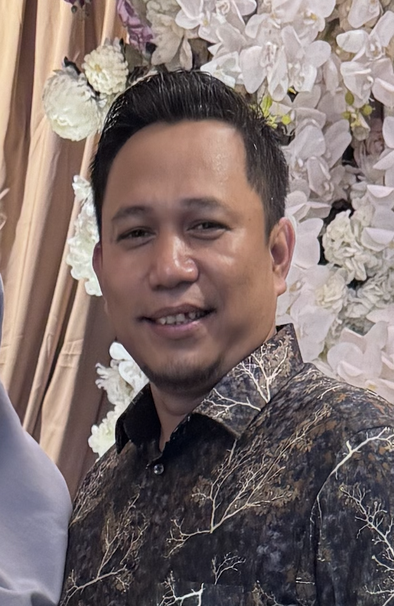

Profil Tri Waluyo

Ayah
Tri Waluyo
Nama lengkap:
Tri Waluyo
Tempat / Tanggal Lahir:
Jakarta / 15 Oktober 1985
Hobi:
Berkebun, membaca berita, & meracik kopi hitam pagi.
Pekerjaan:
Karyawan Swasta
"Kerja keras tidak akan mengkhianati hasil."